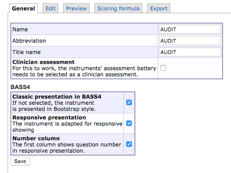
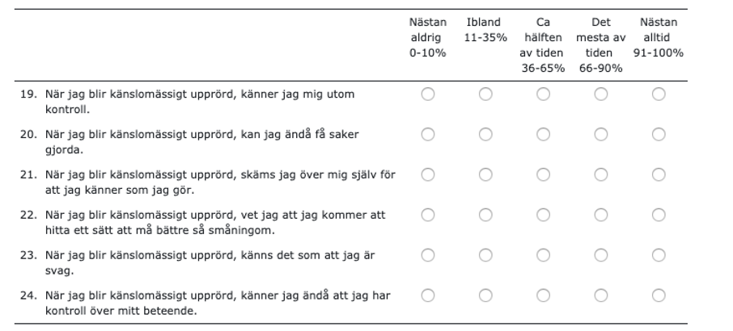
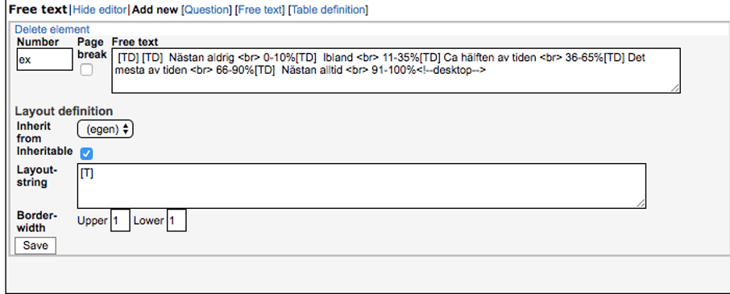
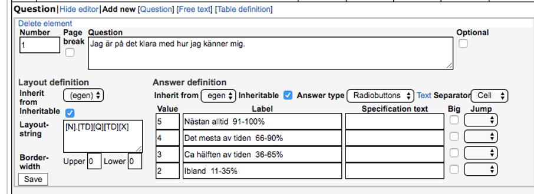

Chapter 11 Instruments
In BASS, instruments are the building blocks of assessments. Under this menu option, you can view a list of all the instruments currently set up in your database, as well as Create new instrument by using the built-in editor and Import instrument from XML to import an already built instrument from another BASS database by copying its XML code. You can also edit instruments, as well as delete them.
But first, let’s examine the table.
- To the left we have the Name column. This simply shows the name of the instrument, as well as if it is adapted to responsive presentation (a small cell phone icon will be shown) and/or if it is a clinician rated instrument (a small, grey scroll icon will be shown). Responsive presentation means that the instrument is set up to adapt to different screen sizes, i.e desktop/laptop screens and mobile screens.
- Next is the Abbreviation column, which shows the abbreviation of the instrument (if one is specified), such as MADRS-S, HADS, PHQ-9 and so forth.
- The next column is labeled Title name, and is the title shown to participants. This can be either the proper name of the instrument, a name of your own choosing, or nothing at all.
- The Id column shows the ID the instrument is given within your database. This is useful if you want to set up Answer flags for an instrument. In such a case, you can refer to the instrument’s ID rather than its name, since the ID can’t be changed. As such, it is a more stable way and less vulnerable to changes.
- The following column, #Items, displays the number of items in the instrument.
- The next column, #Completed, displays the number of times the instrument has been completed by participants.
- The #Ass.batt. column displays the number of Assessment batteries in which the instrument is included.
- The last the columns are Edit (the pencil icon), Copy (the clipboard icon) and Delete (the trash can icon).
There are two ways to create a new instrument in BASS4. Either you can copy an existing instrument, that is similar to the one you wish to create and adjust that instrument. You can also create a new instrument from scratch, using the built in tool in BASS4.
11.1 Copy an instrument
To copy an instrument, follow these steps:
1) Navigate to Instruments in the main menu to the left. Here you can view all instruments currently available in your database.
2) On the far right of the instrument you wish to copy, next to the trash can icon, is an icon resembling two documents. If you hover with the mouse pointer over this icon, it will say “Copy instrument”. Clicking on this icon will create a copy of the instrument, called “Copy of [Instrument]”.
3) Open the instrument you just created by clicking the pencil icon to the right on the instrument row. If you hover the mouse pointer over the pencil icon, it will display the tooltip “Edit instrument”. Clicking the pencil icon will show the instrument editor. The “Creating a new instrument” section explains how this editor works.
4) Prior to editing the instrument, it’s good practice to open a separate window or browser tab by using the Preview-function. This function is located under the Preview-tab, and opened by clicking the “Open preview in Clojure app” hyperlink. By default, a new tab will open where the instrument will be displayed in its formatted layout. It’s a good idea to have this tab opened while editing the instrument in the instrument editor, and switching back and forth between the browser tabs to see your updates displayed in the Preview.
11.2 Creating a new instrument
To begin creating a new instrument, navigate to Instruments in the main menu on the left. This will open up a table view showing you all the instruments currently available in your database. On the bottom of the table, there is a hyperlink with the text “Create new instrument”. Clicking this hyperlink will take you to the General view of the instrument editor, as shown in picture 1 below. The tabs named Edit, Preview, Scoring Formula and Export are also displayed.
11.2.1 The General Tab
This tab is where you can change the Name of the instrument, its Abbreviation (both of which are only show in the administrator’s view), as well as the Title name (which is the title presented to the participants). For example, this could be Audit in all three cases, as show in picture 1 below.
 Picture 1
If the instrument you are creating is supposed to be filled out by a clinician, you check the box called Clinician assessment.
11.2.1.1 The BASS4 Table
This table contains three options that influence the presentation of your instrument.
Classic presentation in BASS4 governs whether your instrument is shown in a classic layout, i.e somewhat smaller font size, or a more modern layout with a somewhat larger font size (16 pixels).
Responsive presentation governs whether or not your instrument is adjusted automatically according to the size of the screen it is viewed on (i.e mobile or PC/Mac). This mainly affects Question items, where answers ordered by cell will require additional steps be taken in order to display correctly.Instructions on how to do this are found under the “Edit” section.
Answers ordered by line break will automatically display correctly both on mobile and PC/Mac with this option checked.
Leaving this box unchecked will cause the instrument to display its PC/Mac layout regardless of which screen it is viewed on. It will not adjust to mobile screens.
Number column governs whether or not the first column of the instrument is assigned to the display of question numbers in responsive presentation.
When you’ve entered the information, click save.
11.2.2 The Preview Tab
In this tab, you can view the instrument with it’s final visual design applied (the final visual design is applied automatically by BASS) by clicking the hyperlink named “Open preview in Clojure app”. By default, a new tab will open, in which the instrument will be displayed with its final visual design applied. It’s a good idea to have this tab opened while editing the instrument in the instrument editor, and switching back and forth between the browser tabs to see your updates displayed in the Preview.
11.2.3 The Edit Tab
This tab is where you create, or build, your new instrument. This is also where you adjust any instrument you’ve copied or want to edit. This is mainly done through adding, editing or deleting content in the form. To begin, start by creating and defining a table definition
Add table definition
By default, the first table definition is already created. However, it has not been defined, and thus you need to define it before proceeding to adding additional items and elements to your instrument. To do this, click the “Edit” text in the Table definition box. This opens up the editor for this specific item (in this case a table definition).
One thing to note before starting to assign Cell width is that the total width of your instrument is fixed to 700 pixels on PC/Mac. As such, you will have to stay within those confines when defining your table definition.
If responsive presentation is used, the instrument width will adapt to a mobile screen size where applicable.
A table definition provides a layout framework for every item below it, up until the next table definition (if there is one).
A good practice is to allow the first column to take up 30 pixels of screen space. This is done by typing 30 into the first box of the Cell width column. If you so wish, you can justify the text of a box to be either left aligned, centered, or right aligned by choosing the corresponding option in the box’s dropdown menu in the Justify column. The second cell is most often reserved to the text of a question, and can be set to the desired width by typing it into the box. Typing a * into the box makes its cell flexible, causing it to fill any left over width not claimed by the other cells in the table definition. If multiple cells are given a flexible width by typing * in their cell width boxes, they will share the left over width evenly. The third through 16th cell is usually utlized for answers to a question item, when ordered by Cell (horizontally) and can be given any desired width. However, remember that width is limited if you are ordering answers by cell, and that long words in an answer may clip into eachother if the allocated space is too small. Ordering answers by line break organizes them in a vertical structure, and as such they do not suffer this limitation. If you plan to order your answers by line break you only need to fill in the boxes for cell 1 and 2 in your table definition that governs the layout for the question items that utilizes line break
Add information
Usually a form starts with information on how to fill it out, and as such you want to add that information before you add your questions. To do this, click “Add new [Free text]” and type the information ionto the “Free text” box.
In “Free text” you type regular HTML or regular text input. You can find some basic HTML tags in the appendix of this manual, with links to more thorough resources listed as well. In “Layout-string”, you type [T], which instructs BASS to render the text in the “Free text” box. Then press save.
Hint: If you want to have a line above or below your text, to act as a separator, you can type in 1 in the “Border-width upper” or “Border-width lower”, respectively.
Adding questions
Depending on what questions you would like to add, you go about adding them in different ways. We will adress the most common type of question below.
Adding multiple-choice questions
By follow the instructions below, your end result will look similar to this:

First, you will need to add a new “free text”. To do this, click “Add new [Free text]”. Then type in the options that are needed for the questions you want to add. For example, if you have five options to your question, you type it in like in picture 4 picture below.  Picture 4
If you have more options, you add them by typing “[TD] option 6”, before the HTML tag <!--desktop-->. If you have less options, you delete the superfluous [TD] with accompanying text. The reason for the twin [TD][TD] in the beginning is to make empty space for the question you’re adding later. The reason for the single [TD] between the options is to separate the options.
Hint:
<br>is HTML and means that the rest of the text starts on a new row, i.e it implements a line break. If you want to have numbers on one row and the text under, you can add two
tags in between. If it’s all supposed to be on the same row, you can omit including any<br>tags.
Like in the “Free text” example, you type [T] in “Layout-string” to instruct BASS to render the text. Then decide whether or not you want borders above or below the text by typing in a numerical value in “Border-width upper” or “Border-width lower”, respectively. Then click “Save”.
Below the created “free text”, you now click “Add new [question]”. In the number box, you type in the number you want to assign to the question. In the “Question”-box you type in the question or statement.
By using the tools in the “Answer definition” section, you can define what type of answer you want. By default, “Radio buttons” is selected as the “Answer type”. If you want multiple choice, you change the “Answer type” to “Checkboxes”. You can then fill out the different options under “label” (in this example you would use the same options you typed in “free text”) and give them unique values under “value”, see picture 5 below. The values are used to calculate the result with a scoring formula later on.
Important note: The values for each answer option in a question have to be unique. If to answer options are supposed to have the same value, this is corrected for later on in the scoring formula.
When you’ve filled in your answer options and their unique values, you can choose “Cell” under the “Separator”-dropdown. In “Layout definition” you type in the following: [N].[TD][Q][TD][X]. This defines the layout for the question within the framework provided by your table definition. When this is done, click “Save”.
HELP! What does [N].[TD][Q][TD][X] mean?
- [N] Renders the number of the question in a cell. The period simply puts a period after the rendered number.
- [TD] Creates an empty cell
- [Q] Renders the text of the “Question” box in a cell
The input in the “layout definition” box is read from left to right, and is applied in the same order. In the layout above [N] is rendered in the first cell, [TD] creates a space, [Q] is rendered in the second cell and [X] is rendered in the third through seventh cell.
Hint: Make a habit of going back to your Preview page to see what your form looks like. This lets you correct mistakes and make adjustments as you go along.
Hint: You can read about “optional”, “inheritable”, “jump”, and “specification text” under “Extra information”.
 Picture 5
Adding a text-answer question
To add a question with a text answer, click “Add new [question]”. Follow the same procedure as detailed above, by typing the number you want to assign to the question in the number box, and typing your question or statement into the question-box. Under “Answer definition”, choose what type of answer you want, either “short free text” or “long free text”. In “Layour-string”, type in [N].[TD][Q][X].
Having the multiple-choice answer options listed vertically instead of horizontally
If you would rather have your answer options listed vertically below your question, you type the question in a Free text. To do this, click “Add new [Free text]”. Then type the question into the free text box, and type [T] into the layout-string box.
Below the “free text” you just created, click “Add new [question]”. In the number box, assign the number you wish your question to have. Leave the “question”-box empty.
Proceed to fill out the “Answer definition”, and type in your answer options and their unique values. Then, choose “Line break” in the Separator-dropdown.
11.2.4 Extra information
Optional questions
If the question is not mandatory, you can tell BASS to treat it as such by checking the “optional”-box, in the upper right corner of the question-editor window. This enables a participant to complete the form without submitting an answer to that specific question.
Page break
If you want a question to appear on a new page, you can tell BASS to divide your form into pages by checking the “page break”-box in the upper left corner of an editing window. By checking this box, the item for which you check it will be the first item to display on the new page. The following items will show on the new page.
Using the jump function
If you want an answer option to skip a participant ahead in your form, for example if a subset of questions isn’t relevant if a particular answer option is selected, you can do so by using the “jump”-function. You find this function to the right of each answer option. Open the dropdown, and select the item you wish that answer option to skip ahead to.
Re-use layout and options
If you have multiple questions that use the same layout and/or the same options, you can check the “inheritable”-boxes for “layout-string” and/or “answer options”. This enables the settings of one question to be inherited by another. In the editing window of the questions you wish to be inheriting settings, use the “Inherit from”-dropdown and choose the question you want them to inherit from.
Adding more questions
Adding a multiple-choice question that have the same options as the previous question.
If you want to add more questions with the same options as the previous question you just created, click “Add new [question]” and fill out the new question like you did the previous one.
Hint: Don’t forget that you can use the “inherit”-function. Read more about this function in the “Extra information”-section, “Re-use layout and options”.
Adding a multiple-choice question that do not have the same options as the previous question.
If your next question has a different set of answer options than the previous one, but the same number of answer options, you add a new free text and write the options like previously instructed, and then add the new question.
If your next question has a different number of options as the previous question, you need to add a new “table definition” that provides a new layout framework that fits the structure of the new question. Then proceed to add the new free text and question as previously instructed.
Adding a text-answer question.
Create a new question by clicking “Add new [question]” and fill it out like previously instructed.
11.3 Scoring formula
In the Scoring formula tab, you can define formulas that calculate the scores from the different items in your instrument. You refer to specific items in your instrument by using the @# identifier, i.e @1 refers to question 1, @2 refers to question 2, and so on.
Should you leave the scoring formula blank, you will still get all value readouts from your instrument. The scoring formula is meant to help with calculating different scores that are relevant to your instrument.
Defining a calculation:
sum = @1 + @2 + @3 + @4 + @5
#sums sum
If you want to calculate several sums or products, you define each score (sum) by giving it a number.
Adding several scores:
sum1 = @1 + @2 + @3sum2 = @4 + @5 + @6sum3 = @7 + @8 + @9#sums sum1, sum2, sum3
Multiplying several scores:
sum1 = (@1 * @2) + (@3 * @4)
sum2 = (@5 * @6) + (@7 * @8)
#sums sum1, sum2
You can also calculate the mean of a score, by dividing the number of questions included.
Calculating the mean of a score:
sum1 = @1 + @2 + @3 + @4 + @5
mean1 = @1 + @2 + @3 + @4 + @5 / 5#sums sum1, mean1
Just as you can calculate several sums and products, you can also calculate several means.
Calculating several means:
mean1 = (@1 + @2 + @3) / 3
mean2 = (@4 + @5) / 2
mean3 = (@6 + @7 + @8 + @9) / 4
#sums mean1, mean2, mean3